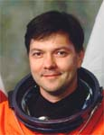

Lyndon B. Johnson Space Center
Houston, Texas 77058
|
National Aeronautics and Space Administration Lyndon B. Johnson Space Center Houston, Texas 77058 |
 |
Biographical Data |
||
Kononenko Oleg Dmitrievich
soyuz tma-m flight engineer
iss flight engineer
rsc energia Test Cosmonaut
102nd russian cosmonaut, 473rd world cosmonaut
PERSONAL DATA: Born 21 June, 1964, in Chardzhow, Turkmenia. Married to Tatiana Mikhailovna Kononenko, they have two children, daughter Alisa and son Andrey, born in 2003. Oleg enjoys reading books, sport games, and spending time with the family.
EDUCATION: Graduated from the N.E. Zhukovksy Kharkov Aviation Institute in 1988 as a mechanical engineer.
AWARDS: Hero of the Russian Federation (2009), Gagarin and Korolyov pins from the Federal Space Agency, “Prezidentiň ýyldyzy” Order of Turkmenistan, NASA Distinguished Public Service and Space Flight medals.
EXPERIENCE: After graduation from the Kharkov Aviation Institute he worked at the Central Design Bureau in Samara as an engineer, design engineer and leading design engineer.
SPACEFLIGHT TRAINING: In 1996 Oleg Kononenko was selected as a test cosmonaut candidate to the Cosmonaut Corps of the Samara Central Design Bureau. From June 1996 to March 1998, he underwent basic cosmonaut training at Gagarin Cosmonaut Training Center and on March 20, 1998, was awarded the title of test cosmonaut by the Interagency Qualification Committee.
In October 1998 he began training as part of the group of cosmonauts selected for the International Space Station (ISS) Program. In January 1999 he was assigned to the RSC Energia Cosmonaut Corps as a test cosmonaut.
From December 2001, through April 2002 Kononenko trained as a backup flight engineer for the Soyuz TM-34 vehicle for the third ISS visiting crew. From April 2002 through February 2004, he trained as the flight engineer for the Soyuz TMA vehicle and the Expedition-9 and Expedition-11 prime crews. Due to the changes in the ISS program, the ISS crews were reassigned.
From March 2004 through March 2006 he trained as part of the group of cosmonauts selected for the ISS Program. From March 2006 to April 2008 Volkov trained as an ISS 17 prime crew commander and Soyuz TMA commander.
From December 2009 he has been training as a Soyuz TMA-M flight engineer and ISS flight engineer in the ISS-25/26 backup crew.
SPACEFLIGHT EXPERIENCE: Kononenko performed his first spaceflight April 8 – October 24, 2008 as Soyuz TMA-12 flight engineer and ISS flight engineer. During this flight JEM PM of the Kibo module and the JEMRMS manipulator were installed, and ATV-001 “Jules Verne” operations took place for the first time. Kononenko logged 12 hours 15 minutes of EVA time in two spacewalks and logged a total of 199 days in space.
SEPTEMBER 2010
{kind=link}